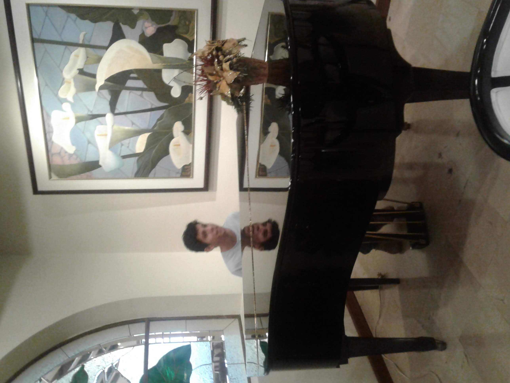
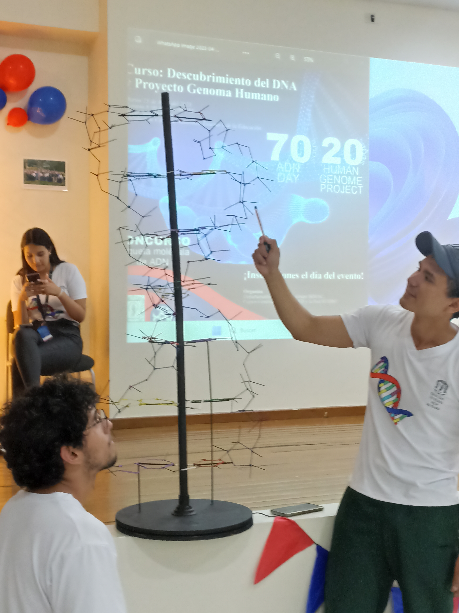
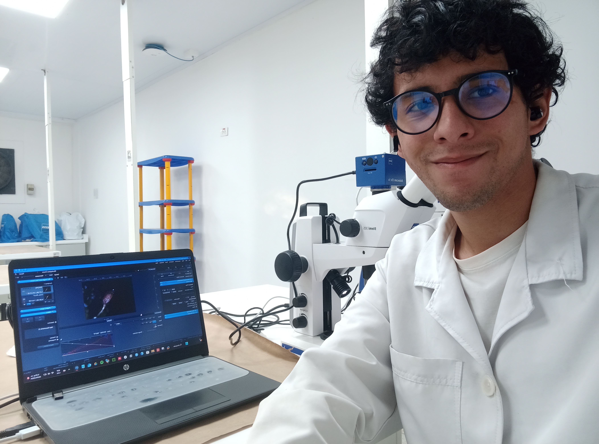
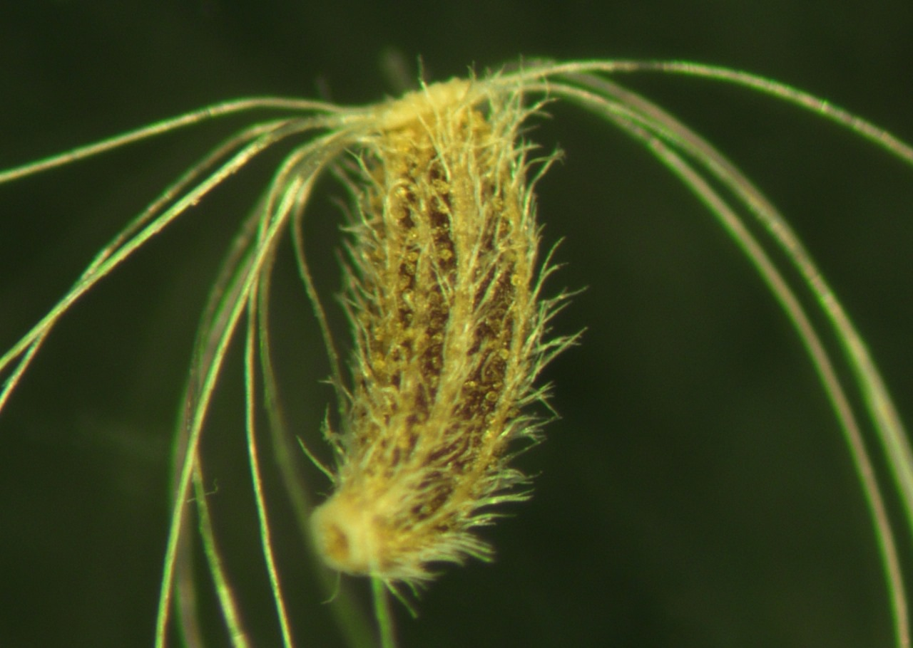
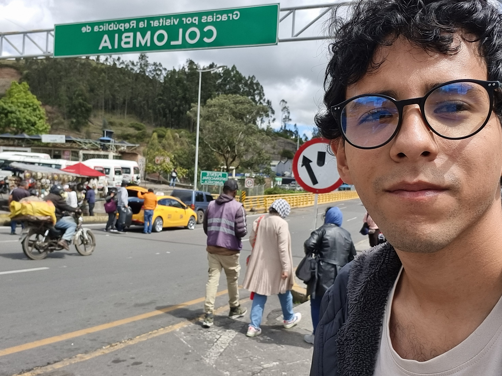
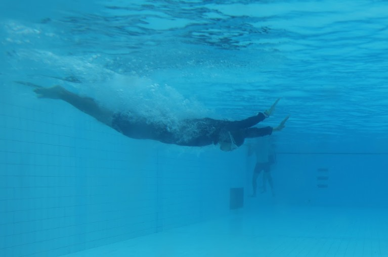

About
I’m studying a B. S Biology at the Cauca University. I’ve a deep interest about of the Neurobiology, Bioinformatic , Botanic and Physiology fields. In my carrer I had discovered several things and I think that enough for comunicate a little thing to others. I pretend make divulgation of Science and I ’m convence that it should free.
That’s me

I’m from of Portoviejo, Ecuador. It’s a coast city in this country. The best of this city is the food, people and beachs. Is the principal city of the Manabi Province.Currently, I live in Colombian.
I like the music. I learned to play piano because I wanted to play Classical music. But, the guitar and violin were converted into my enriching real experience. After, I started study B.S Biology at the Cauca University

My Career. The best opportunity that I lived
After, my team and I won the firts place for the approach best build of DNA. This builded only with “STICKS”. That’s incredible.
Thank for my team: Daine Tatiana, Yomira Pérez and Luigi Stiven. We’re the best.


Several travels with my career and this it’s probably the best. I met the Colombian Pacific Region. The best experience. The pacific region in Colombian is probably the minor region knowledge about biodiversity. Did you know this?
Currently State
The last year, I start worked in a Project about to bryophytes taxonomy. The project was an iniciative to Biology Department for manage to possible Interurban Biological Corridor in the city.


After, I continue worked in other projects, as the of Asteaceae germination present at the XII Botanic Colombian Congress in Nov 5 2024.
Futhermore. Thank you to Museum of Natural History (MHN)for this opportunity in the COP-16.
I can met Cali-Colombia


Currently. I pretend follow with the laboratory lab. This the best part of the career. The nature too, of course.
That’s all
I’m very grateful with Colombia. That’s my second home. This country gave me many opportunities for increase my life, my academic profile and I find the love. Thank.


I like Swim. But this photo is very funny.
For more information…

You can consult my CV in the menu or cickling in the follow hipervincule: